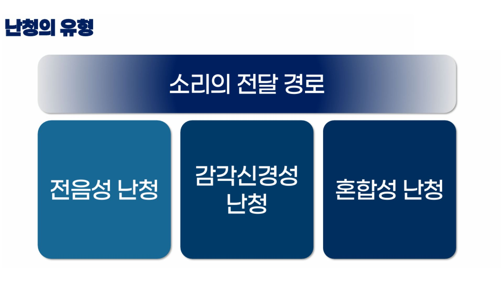
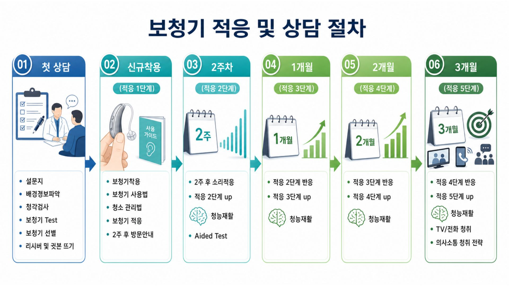

박진우보청기 청각전문그룹 스마트 상담 시스템
1. 귀의 구조와 소리 전달 경로
소리 전달의 이해
각 부위를 클릭하여 소리가 전달되는 원리를 확인해보세요.
2. 소리 전달 시뮬레이션 영상
3. 난청의 유형

4. 청력 분석 및 맞춤형 솔루션 시뮬레이션
우측(R) 평균 (6분법)
20.0dB
좌측(L) 평균 (6분법)
30.0dB
보청기는 단순한 스피커가 아니라 뇌로 전달되는 해상도를 관리합니다.
🛡️ 소음 억제 기술 (NR)
환경을 선택하고 보청기 착용 효과를 확인해 보세요.
5. 보청기 형태 안내

6. 보청기 적응 및 상담 절차
